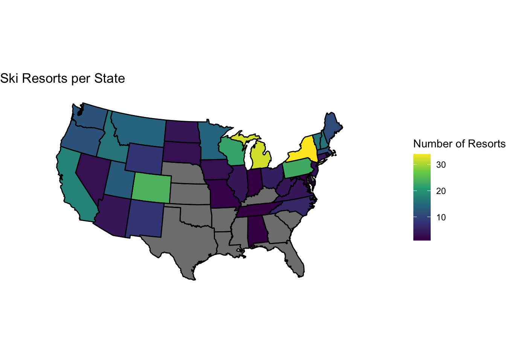

I chose a data set from 2017 with data on US ski resorts. There are 364 observations and 16 variables ranging from vertical drop, elevation (base and summit), lifts, runs, acres, and more. I will be looking into difficulty level, that is, which ski resorts have the highest percentage of black-diamond trails. I will also investigate vertical drop, and the states with the most ski resorts. The data set can be found at https://gist.github.com/Ewiseman/b251e5eaf70ca52a4b9b10dce9e635a4 and we can also glance at it below:
kable(head(us_ski))
resort_name
state
summit
base
vertical
lifts
runs
acres
green_percent
green_acres
blue_percent
blue_acres
black_percent
black_acres
lat
lon
49(degrees) North, WA
Washington
5774
3923
1851
6
68
2325
0.30
697.50
0.40
930.00
0.30
697.50
49.00
-115.84
Afton Alps, MN
Minnesota
700
350
350
21
48
300
0.20
60.00
0.60
180.00
0.20
60.00
44.85
-92.79
Alpine Meadows, CA
California
8673
6385
2288
13
100
2400
0.25
600.00
0.40
960.00
0.35
840.00
39.17
-120.22
Alpine Mountain, PA
Pennsylvania
1150
600
500
3
21
120
0.17
20.40
0.55
66.00
0.28
33.60
40.08
-76.90
Alpine Valley, MI
Michigan
1210
910
300
14
25
118
0.39
46.02
0.26
30.68
0.35
41.30
44.96
-84.87
Alpine Valley, OH
Ohio
1500
1260
230
6
11
72
0.33
23.76
0.34
24.48
0.33
23.76
40.31
-83.68
Part 1: Number of Ski Resorts per State
us_ski <- us_ski |>separate(resort_name,sep =",",into =c("resort", "state_abbr"))num_state <- us_ski |>group_by(state) |>summarise(num_resort =n()) state_df <- ggplot2::map_data("state")state_df$region <-toTitleCase(state_df$region)resort_map <-left_join(state_df, num_state, by =c("region"="state"))ggplot(data = resort_map, mapping =aes(x = long, y = lat, group = group)) +geom_polygon(aes(fill = num_resort), color ="black") +coord_map(projection ="albers", lat0 =39, lat1 =45) +scale_fill_viridis_c(name ="Number of Resorts") +labs(title ="Ski Resorts per State") +theme_void()

The above map shows the number of ski resorts per state. Some states are gray, indicating there are no ski resorts. The sequential color scale allows us to see the states with higher numbers of ski resorts. New York, Michigan, Colorado, and Pennsylvania stand out as the states with the most ski resorts. Despite having access to skiing in many states, the number of resorts varies, and the size of the resorts varies as well. Even though Pennsylvania has a lot of ski resorts, on average they’re significantly smaller than ski resorts in a state like Colorado.
numres_df <- us_ski |>group_by(state) |>summarise(num_resorts =n()) |>arrange(desc(num_resorts)) |>slice(1:6)kable(numres_df,caption ="Top 6 States: Number of SKi Resorts",col.names =c("State", "Number of Resorts"))
Top 6 States: Number of SKi Resorts
State
Number of Resorts
New York
34
Michigan
32
Colorado
24
Pennsylvania
23
Wisconsin
22
California
18
The above table summarizes the top 6 states with the most ski resorts. The top 3 states are New York (34), Michigan (32), and Colorado (24).
The above graph shows the most difficult ski resorts in the US based on the variable percent black. Since every ski trail has a rating: green (easy), blue (intermediate), and black (expert), we can look at the ski resorts with highest percentage of black diamond trails. In this case, Silverton (Colorado) is 100% black diamond, followed by Mount Bohemia (Michigan) at 93%, and Mt. Ashland (Oregon) at 75%. The rest of the top 10 has about 50% black diamond trails. We do have to consider that there is not a “baseline” scale in rating a trail’s difficulty, so there is likely some level of inaccuracy here.
ggplot(data = us_ski, aes(x = summit, y = vertical)) +geom_point(size =0.9) +geom_smooth(color ="blue4") +theme_minimal() +labs(title ="Relationship between Vertical Drop and Summit Elevation",x ="Summit Elevation (ft)",y ="Vertical Drop (ft)")
The above graph show the relationship between vertical drop and summit elevation of a ski resort. There is not constant variance; however, the smoothed line shows the overall trend. We can see that the ski resorts with higher summit elevation are more likely to have more vertical drop.
The above table shows the top 15 ski resorts with the most vertical drop. Telluride (Colorado) has the most vertical at 4570 feet, followed by Snowmass (Colorado) at 4406 feet, and Big Sky (Montana) at 4350 feet. In the top 15, only one mountain is on the East Coast, Whiteface Mountain, with 3430 feet of vertical drop.
Conclusion:
Although this data set is pretty extensive, it doesn’t include every ski resort in the country Other limitations include rating trail difficulty. There isn’t a “baseline” scale used to rate difficulty, so a black trail at a mountain in Michigan may be a blue in Colorado. I’ve been using the word “ski resort” to be consistent with the data set, so in this analysis the term “ski resort” is interchangeable with “ski area”. However, resorts are typically more comprehensive, developed, and are operated by large corporations. Contrarily, a ski area is more likely to be independent or community-operated with less amenities and fairer prices. In further analysis, I’d be interesting in a variable that specifies the ownership of the mountain (corporation vs. independent), and other categorical variables like region (east coast vs west coast).
Connection to Class:
When looking at the number of ski resorts in each state, a map is an effective visualization. It makes it easy to see which states don’t have ski resorts, which have the most, and perhaps comparing states in certain regions. I included a table with this data as well just to see more exact numbers.